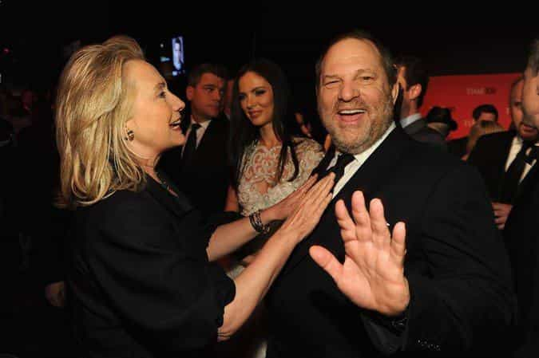
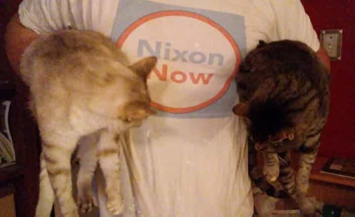

Hillary Clinton recently interviewed with Britain’s Channel 4, first asked if she still believes that The Donald is “a clear and present danger to the United States, and indeed the world”. She confirmed this opinion, citing his plans to de-certify the Iran nuclear agreement. To lift economically damaging sanctions, Iran would reduce (but not eliminate) their isotope enrichment capacity temporarily. Gosh, why would anyone think that’s a lame deal?
More boldly, the interviewer discussed the email server brouhaha. However, he generously omitted embarrassing specifics, like wrongfully conducting highly sensitive State Department business on a private server lacking government oversight and security measures. Hillary had a ready response, beginning that “it was a dumb mistake, but a dumber scandal”. (No genuine remorse, or even decent method-acting?) Then Her Majesty had the chutzpah to blame the media for the fallout. (Out of touch much?) Further:
There was an investigation, which I knew would lead nowhere, it led nowhere…
Oh, was that because all the data she didn’t want investigators to find got deleted with Bleachbit? Cupcake’s remarks made Nixon’s historical legacy a little brighter.
Harvey Weinstein

Halfway into the video, he asked about Harvey Weinstein. Laying it on pretty thick, the interviewer even called her “a beacon of feminism”. (Actually, I agree, though not in praise.) It’s a pretty touchy subject, if you’ll pardon the expression. Weinstein has been a very enthusiastic Democratic Party supporter, donating heavily, even hosting fundraisers.
Hillary emphatically denied hearing any rumors prior to the recent revelations. That much is plausible. After all, Hollywood is pretty tight-lipped about certain things. Quickly switching to attack mode:
Look, we just elected someone who admitted sexual assault to the presidency. So there’s a lot of other issues that are swirling around these kinds of behaviors that need to be addressed.
Since Hillary keeps beating this dead horse, let’s set the record straight about this frequently-quoted “grab ’em by the pussy” soundbite.
What Trump’s remark actually meant

What The Donald didn’t mean by grabbing pussies
Trump and TV host Billy Bush were aboard a parked tour bus. A camera outside overlooked the parking lot. The two chatted idly, including some crude remarks; likely unaware the microphones were on. Arianne Zucker was to arrive soon, and Bush repeatedly urged Trump to make an overly-dramatic greeting.
Then the infamous quote:
I better use some Tic Tacs just in case I start kissing her. You know I’m automatically attracted to beautiful—I just start kissing them. It’s like a magnet. Just kiss. I don’t even wait. And when you’re a star, they let you do it. You can do anything. Grab ’em by the pussy. You can do anything.
It’s plausible to take the first part literally; that Trump had kissed some beautiful women, quite quickly, and with their willingness—“they let you do it”. However, the rest is crude hyperbole concerning the boundless potential of this willingness, given female enthusiasm toward celebrities in general. Trump doesn’t say that he specifically did that, much less without anyone’s willing participation. This meant, “For celebrities, they would allow even that”, rather than “I did that”, and certainly never implied anything without their approval.
When Zucker arrived, Trump—despite his previously stated appreciation of her appearance—certainly did not plant a big wet one on her, much less grab her crotch. He didn’t even use the overly-dramatic greeting as recommended. Billy suggested that she hug Donald, which she did. It’s pretty anticlimactic. Then they walked into the building and down the hall, with nothing further even slightly objectionable.
Among friends, guys can let it all hang out. “Locker room talk” particularly is crude, politically incorrect, frequently exaggerated, sometimes juvenile, often joking around, and certainly not intended for public consumption. Women do that too among themselves. In mixed company and formal situations, people normally clean up their language.
Several Presidents are pretty well-known for potty-mouth moments: JFK, LBJ, Nixon, and Clinton too. However, the recording was made a decade before Trump entered the Republican campaign. The media digging this up a month before the election was simply “gotcha” politics.
Did Hillary forget something?
The 2016 election’s “elephant in the room” was Hillary’s husband Bill Clinton. Arkansas State Trooper stories and “bimbo eruptions” were notorious long before the Lewinsky shenanigans. However, other allegations came out during the investigation, for example:
In the first published account of the alleged incident, the former Clinton campaign worker describes a meeting in his hotel room in which Clinton held her down forcibly on a bed and bit her lips while engaging in sexual intercourse.
After the encounter, she says in Friday’s edition of the Journal, Clinton told her not to worry because he was sterile. When she was leaving the room, he looked at her bruised face and, according to Juanita Broaddrick, said: “You better put some ice on that.”
Did Hillary know? According to Broaddrick’s open letter:
What did you mean, Hillary? Were you referring to my keeping quiet about the assault I had suffered at the hands of your husband only two weeks before? Were you warning me to continue to keep quiet? We both know the answer to that question.
I could continue excavating the mountain of dirt covering the Clintons and their interesting connections, but we’ll leave it with that.
“Tu quoque” right back at you

Hillary has zero credibility and zero room to criticize
Ultimately, it’s pretty disingenuous of the Hilldebeest to respond to the newly-breaking Weinstein stories by deflecting it back onto Trump’s crude but misconstrued statement in a 2005 private conversation.
The softball interview concludes with the media talking head bringing up “White supremacists”. As if on script, immediately Hillary castigates Trump for anti-immigrant rhetoric and appealing to White voters.
Whatever scapegoat you wanted, whatever prejudice you held, was going to be fed by Donald Trump.
Since the 1960s, the Democrats very openly have courted minorities, while increasing their bloc voters tremendously through population replacement immigration. That’s perfectly fine, but appealing to Whites is super deplorable; the typical leftist double standard. Isn’t it time Cupcake gets over losing the election?
Read More: Trump Presidency Creates Mountains Of Salt From Butthurt Liberals